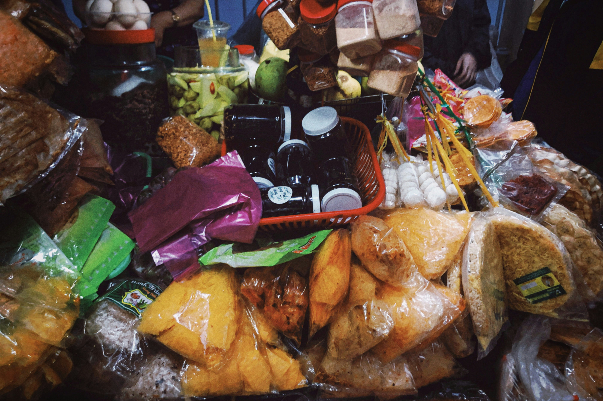

O Projeto Mesa Cheia distribuí cestas básicas e refeições em comunidades em situação de vulnerabilidade.
Projetos em Andamento
Oferecemos o curso Capacitar para Crescer em oficinas para geração de renda e inclusão no mercado de trabalho.

Como Ajudar
Você pode fazer a diferença sendo voluntário ou realizando uma doação.